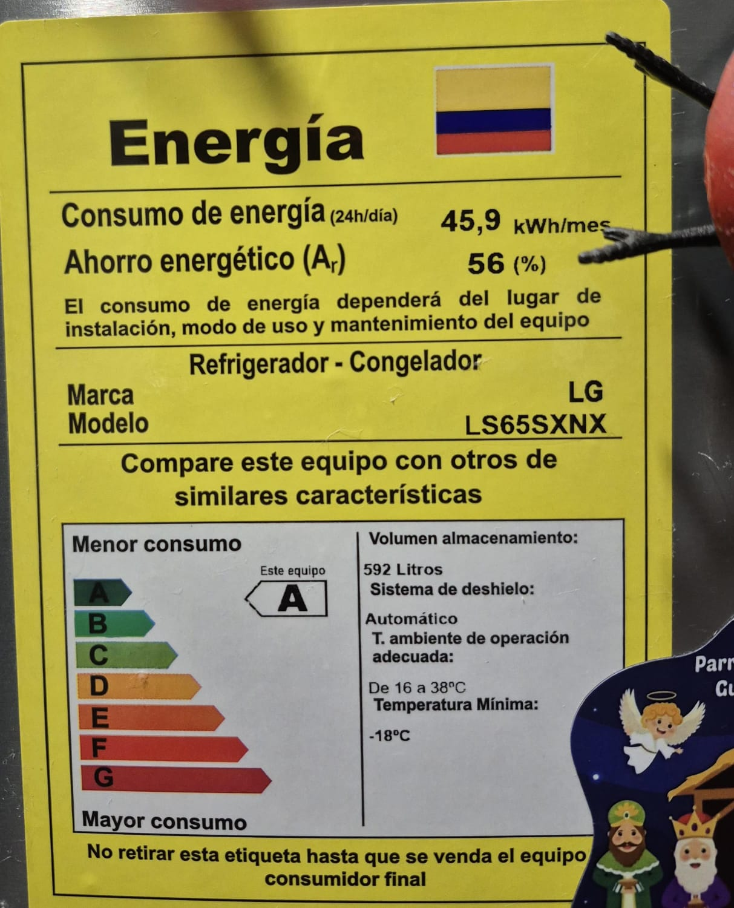
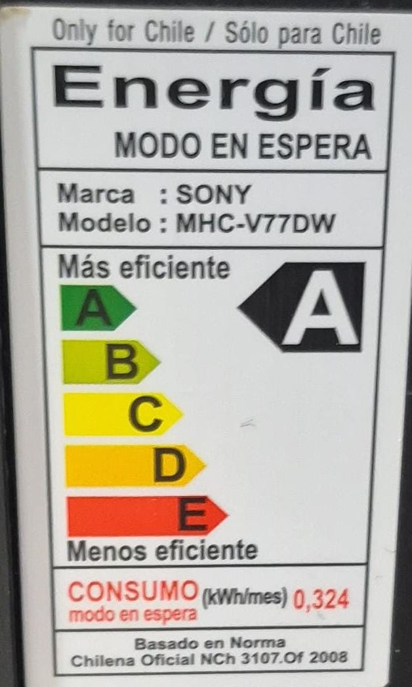
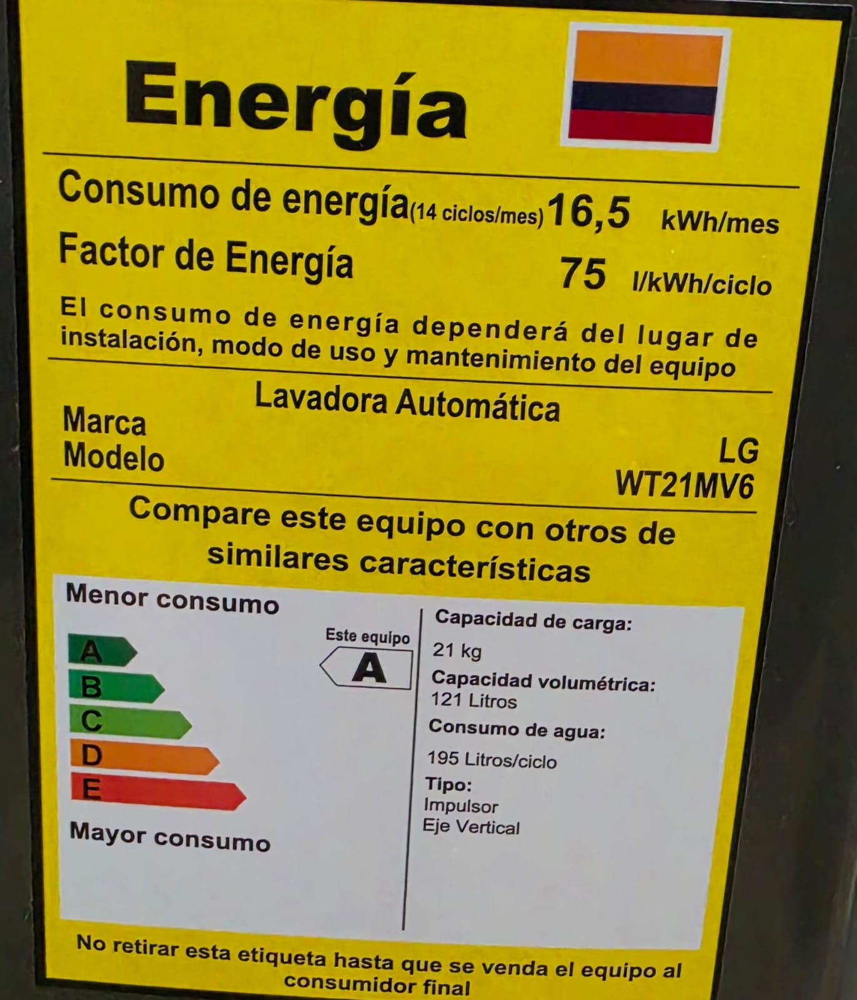
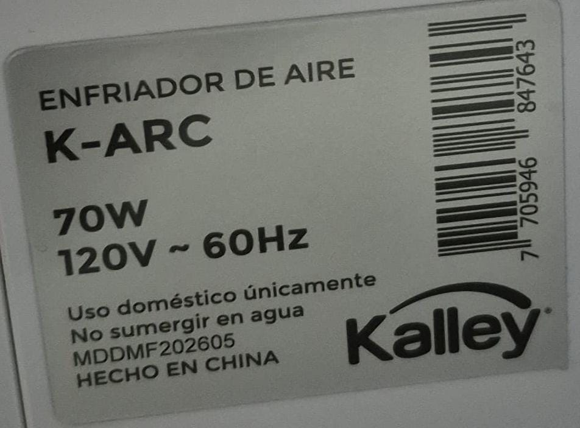

Consumo por aparato
| Aparato | Potencia (W) | Horas de uso por día | kWh en la semana | Costo en la semana (COP) | |
|---|---|---|---|---|---|
| Lunes a viernes | Sábado y domingo | ||||
| Nevera LG | 64 W | 24 | 24 | 10.75 | 7.761 |
| Equipo de sonido Sony | 50 W | 2 | 4 | 0.8 | 577 |
| Lavadora LG | 500 W | 0 | 2 | 1.5 | 1.083 |
| Enfriador Kalley | 70 W | 10 | 12 | 5.18 | 3.740 |
| Total de la semana | 18.23 | 13.161 | |||
*Nota técnica: La potencia de la nevera LG (64 W) se obtuvo al convertir su consumo de etiqueta de 45.9 kWh/mes, asumiendo un uso continuo de 24 horas diarias. La lavadora se calculó promediando sus ciclos de uso.
Fotos de las etiquetas y observaciones
A continuación se muestran las etiquetas de mis electrodomésticos. En las observaciones se detalla lo que dice cada etiqueta y por qué la potencia (W) no es directa en algunos casos:



